<title>Klepon Routing Worklist</title>
<link rel="stylesheet" href="https://fonts.googleapis.com/css2?family=Space+Grotesk:wght@500;600;700&family=IBM+Plex+Sans:wght@400;500;600&family=IBM+Plex+Mono:wght@400;500&display=swap">
<style>
/* Layout: one working column; an overview map, then gap cards grouped in the order to do them. Palette and type match the Klepon Rev 1 Design report. */
:root{
  --bg:#f4f6f3; --paper:#ffffff; --fg:#17201b; --muted:#56635b; --line:#d5ddd6;
  --mask:#1d6a46; --mask-soft:#e3efe7; --copper:#b4692c; --copper-soft:#f6e9dc; --mark:#0b7a8f; --sheet:#ffffff;
  --f-display:"Space Grotesk",ui-sans-serif,system-ui,sans-serif;
  --f-body:"IBM Plex Sans",ui-sans-serif,system-ui,sans-serif;
  --f-mono:"IBM Plex Mono",ui-monospace,SFMono-Regular,Menlo,monospace;
}
@media (prefers-color-scheme: dark){:root:not([data-theme="light"]){
  --bg:#101614; --paper:#17201c; --fg:#e4ebe6; --muted:#9aa89f; --line:#2b3732;
  --mask:#5fc08c; --mask-soft:#1c3328; --copper:#e09a5c; --copper-soft:#3a2a1c; --mark:#0b7a8f; --sheet:#f7f7f2; color-scheme:dark}}
:root[data-theme="dark"]{
  --bg:#101614; --paper:#17201c; --fg:#e4ebe6; --muted:#9aa89f; --line:#2b3732;
  --mask:#5fc08c; --mask-soft:#1c3328; --copper:#e09a5c; --copper-soft:#3a2a1c; --mark:#0b7a8f; --sheet:#f7f7f2; color-scheme:dark}
body{background:var(--bg);color:var(--fg);font-family:var(--f-body);font-size:15.5px;line-height:1.55}
.wrap{max-width:1120px;margin:0 auto;padding-left:max(16px,env(safe-area-inset-left,0px));padding-right:max(16px,env(safe-area-inset-right,0px));padding-block:0 4rem;display:grid;gap:2.4rem}
header{background:var(--paper);border-bottom:1px solid var(--line)}
header .wrap{padding-block:2rem 1.5rem;gap:.7rem}
.eyebrow{font-family:var(--f-mono);font-size:.78rem;letter-spacing:.08em;text-transform:uppercase;color:var(--copper)}
h1{font-family:var(--f-display);font-size:clamp(1.9rem,4.6vw,2.7rem);line-height:1.05;margin:0;letter-spacing:-.02em;text-wrap:balance}
h2{font-family:var(--f-display);font-size:1.35rem;margin:0;text-wrap:balance}
p{margin:0;max-width:70ch}
.lede{color:var(--muted);font-size:1.03rem}
.stats{display:flex;flex-wrap:wrap;gap:.5rem 1.4rem;font-family:var(--f-mono);font-size:.82rem;color:var(--muted)}
.stats b{color:var(--fg);font-weight:500}
nav.toc{position:sticky;top:env(safe-area-inset-top,0px);z-index:5;background:var(--bg);border-bottom:1px solid var(--line)}
body::before{content:"";position:fixed;inset:0 0 auto;height:env(safe-area-inset-top,0px);z-index:10;background:var(--bg)}
nav.toc .in{max-width:1120px;margin:0 auto;padding-block:.55rem;padding-left:max(16px,env(safe-area-inset-left,0px));padding-right:max(16px,env(safe-area-inset-right,0px));display:flex;flex-wrap:wrap;gap:.3rem 1.1rem;font-size:.86rem;align-items:center}
nav.toc a{color:var(--muted);text-decoration:none}
nav.toc a span{font-family:var(--f-mono);font-size:.78rem;color:var(--copper)}
nav.toc a:hover,nav.toc a:focus-visible{color:var(--mask);text-decoration:underline}
#progress{margin-left:auto;font-family:var(--f-mono);font-size:.8rem;color:var(--mask)}
.panel{background:var(--paper);border:1px solid var(--line);border-radius:6px;padding:1.1rem 1.2rem;display:grid;gap:.6rem;min-width:0}
.steps{display:grid;grid-template-columns:repeat(auto-fit,minmax(min(100%,300px),1fr));gap:1rem}
.steps ol{margin:0;padding-left:1.2rem;display:grid;gap:.3rem}
code{font-family:var(--f-mono);font-size:.86em}
.map{background:var(--sheet);border:1px solid var(--line);border-radius:6px;padding:.5rem}
.map .in{position:relative}
.map img{display:block;width:100%;height:auto}
.map svg{position:absolute;inset:0;width:100%;height:100%}
.map circle{fill:var(--mark);stroke:#ffffff;stroke-width:.25}
.map text{font:600 1.3px var(--f-mono);fill:#ffffff;text-anchor:middle}
.map a:focus-visible circle{stroke:#000000;stroke-width:.5}
.legend{display:flex;flex-wrap:wrap;gap:.4rem 1.2rem;font-size:.82rem;color:var(--muted)}
.legend i{display:inline-block;width:.9em;height:.9em;border-radius:2px;margin-right:.35em;vertical-align:-.1em}
.group{display:grid;gap:1rem}
.ghead{display:grid;gap:.25rem}
.ghead p{color:var(--muted)}
.cards{display:grid;grid-template-columns:repeat(auto-fill,minmax(min(100%,500px),1fr));gap:1rem}
.card{display:grid;grid-template-columns:minmax(0,190px) minmax(0,1fr);gap:1rem;background:var(--paper);border:1px solid var(--line);border-radius:6px;padding:.9rem}
.card.is-done{opacity:.55}
@media (max-width:520px){.card{grid-template-columns:1fr}}
.crop{position:relative;margin:0;align-self:start}
.crop img{display:block;width:100%;height:auto;border-radius:4px;background:var(--sheet)}
.crop svg{position:absolute;left:0;top:0;width:100%;aspect-ratio:1/1}
.crop circle{fill:none;stroke:var(--mark);stroke-width:1.1}
.crop text{font:600 5px var(--f-mono);fill:var(--mark);paint-order:stroke;stroke:#ffffff;stroke-width:1.2}
.crop figcaption{font-family:var(--f-mono);font-size:.72rem;color:var(--muted);margin-top:.25rem}
.nocrop{background:var(--mask-soft);border-radius:4px;padding:.8rem;font-size:.85rem;color:var(--muted);aspect-ratio:1/1;display:flex;align-items:center}
.body{display:grid;gap:.55rem;align-content:start;min-width:0}
.head{display:flex;align-items:center;gap:.6rem;flex-wrap:wrap}
.k{font-family:var(--f-mono);font-weight:500;font-size:.8rem;background:var(--copper-soft);color:var(--copper);border-radius:4px;padding:.05rem .45rem}
.net{font-weight:500;word-break:break-all}
.done{margin-left:auto;font-size:.85rem;color:var(--muted);display:flex;gap:.35rem;align-items:center;cursor:pointer}
.done input{accent-color:var(--mask);width:1rem;height:1rem}
.done input:focus-visible{outline:2px solid var(--mask);outline-offset:2px}
dl{display:grid;grid-template-columns:auto 1fr;gap:.15rem .7rem;margin:0;font-size:.9rem}
dt{font-family:var(--f-mono);font-size:.78rem;color:var(--mark);padding-top:.1rem}
dd{margin:0;min-width:0}
.lay{font-family:var(--f-mono);font-size:.76rem;color:var(--muted)}
.xy{font-family:var(--f-mono);font-size:.82rem;font-variant-numeric:tabular-nums}
.hint{font-size:.92rem}
footer{color:var(--muted);font-size:.85rem}
</style>
<header><div class="wrap">
  <div class="eyebrow">Klepon Rev 1 · PCB layout · T26</div>
  <h1>The last 24 connections to route</h1>
  <p class="lede">Everything else on the board is routed and passes DRC. Each of these 24 needs one small edit the automatic tools couldn’t make, usually moving one via or adding a short stub. Do them with KiCad’s interactive router, then report back for the checks and the quality pass.</p>
  <div class="stats"><span><b>475 / 499</b> connections routed</span><span><b>0</b> clearance, short or hole errors</span><span><b>0</b> schematic mismatches</span><span>board <code>hardware/kicad/klepon.kicad_pcb</code></span></div>
</div></header>
<nav class="toc" aria-label="Groups"><div class="in"><a href="#quick">Quick <span>3</span></a><a href="#gnd">Ground <span>5</span></a><a href="#boost">Boost converter (U4) <span>2</span></a><a href="#soc">Processor supplies (U100) <span>9</span></a><a href="#chg">Charger area <span>2</span></a><a href="#sig">Signals <span>3</span></a><span id="progress" aria-live="polite"></span></div></nav>
<main class="wrap">
  <section class="steps">
    <div class="panel"><h2>Before you start</h2><ol>
      <li>Open <code>hardware/kicad/klepon.kicad_pro</code> in KiCad 10. The scripts have closed their copy, so your edits won’t be overwritten.</li>
      <li>The rules are already set. Default 0.12 mm track and clearance, vias 0.4/0.2 mm. U100 supplies (SoCPower) 0.2 mm. Power 0.3 mm. USB pair 0.155 mm with a 0.127 mm gap.</li>
      <li>Keep In1 (layer 2) solid ground: tracks go only on top, In2 and bottom.</li>
      <li>Use the interactive router (<code>X</code>) with “use net class width”. Refill zones (<code>B</code>) after each group.</li>
    </ol></div>
    <div class="panel"><h2>When you’re done</h2><ol>
      <li>Save, close KiCad and report back. DRC with the schematic-parity check runs next.</li>
      <li>Then the quality pass: USB as a coupled 90 Ω pair, SD and HaLow SDIO length matching, wider charger, boost and battery paths.</li>
      <li>Last: sweep the 14 dangling vias and 5 dangling tracks, tidy the silkscreen, final DRC, production files, report update.</li>
    </ol></div>
  </section>
  <section class="group" id="map"><div class="ghead"><h2>Where they are</h2><p>Click a number to jump to its card. Rows 3 and 5 are fill pieces with no single location, so they aren’t marked.</p></div>
    <div class="map"><div class="in">
    <svg viewBox="98 98 94 84" preserveAspectRatio="none"><a href="#gap-1" aria-label="Gap 1"><circle cx="123.73" cy="160.25" r="1.5"/><text x="123.73" y="160.75">1</text></a><a href="#gap-2" aria-label="Gap 2"><circle cx="141.11" cy="158.00" r="1.5"/><text x="141.11" y="158.50">2</text></a><a href="#gap-4" aria-label="Gap 4"><circle cx="150.35" cy="148.75" r="1.5"/><text x="150.35" y="149.25">4</text></a><a href="#gap-6" aria-label="Gap 6"><circle cx="119.39" cy="154.37" r="1.5"/><text x="119.39" y="154.87">6</text></a><a href="#gap-7" aria-label="Gap 7"><circle cx="154.00" cy="146.02" r="1.5"/><text x="154.00" y="146.52">7</text></a><a href="#gap-8" aria-label="Gap 8"><circle cx="152.01" cy="146.27" r="1.5"/><text x="152.01" y="146.77">8</text></a><a href="#gap-9" aria-label="Gap 9"><circle cx="110.29" cy="140.75" r="1.5"/><text x="110.29" y="141.25">9</text></a><a href="#gap-10" aria-label="Gap 10"><circle cx="114.59" cy="144.00" r="1.5"/><text x="114.59" y="144.50">10</text></a><a href="#gap-11" aria-label="Gap 11"><circle cx="140.00" cy="144.55" r="1.5"/><text x="140.00" y="145.05">11</text></a><a href="#gap-12" aria-label="Gap 12"><circle cx="138.25" cy="142.49" r="1.5"/><text x="138.25" y="142.99">12</text></a><a href="#gap-13" aria-label="Gap 13"><circle cx="141.51" cy="142.02" r="1.5"/><text x="141.51" y="142.52">13</text></a><a href="#gap-14" aria-label="Gap 14"><circle cx="144.09" cy="146.48" r="1.5"/><text x="144.09" y="146.98">14</text></a><a href="#gap-15" aria-label="Gap 15"><circle cx="155.76" cy="153.13" r="1.5"/><text x="155.76" y="153.63">15</text></a><a href="#gap-16" aria-label="Gap 16"><circle cx="148.33" cy="149.52" r="1.5"/><text x="148.33" y="150.02">16</text></a><a href="#gap-17" aria-label="Gap 17"><circle cx="151.79" cy="146.84" r="1.5"/><text x="151.79" y="147.34">17</text></a><a href="#gap-18" aria-label="Gap 18"><circle cx="146.59" cy="152.50" r="1.5"/><text x="146.59" y="153.00">18</text></a><a href="#gap-19" aria-label="Gap 19"><circle cx="150.05" cy="153.30" r="1.5"/><text x="150.05" y="153.80">19</text></a><a href="#gap-20" aria-label="Gap 20"><circle cx="143.12" cy="147.68" r="1.5"/><text x="143.12" y="148.18">20</text></a><a href="#gap-21" aria-label="Gap 21"><circle cx="128.04" cy="152.97" r="1.5"/><text x="128.04" y="153.47">21</text></a><a href="#gap-22" aria-label="Gap 22"><circle cx="128.07" cy="153.68" r="1.5"/><text x="128.07" y="154.18">22</text></a><a href="#gap-23" aria-label="Gap 23"><circle cx="125.52" cy="162.40" r="1.5"/><text x="125.52" y="162.90">23</text></a><a href="#gap-24" aria-label="Gap 24"><circle cx="119.54" cy="158.84" r="1.5"/><text x="119.54" y="159.34">24</text></a></svg></div></div>
    <div class="legend"><span><i style="background:#c83434"></i>F.Cu (top)</span><span><i style="background:#c87b2c"></i>In2.Cu</span><span><i style="background:#4d7fc4"></i>B.Cu (bottom)</span><span>Fills hidden so the tracks show. In1, the solid GND plane, isn’t drawn.</span></div>
  </section>
  <section class="group" id="quick"><div class="ghead"><h2>Quick: missing vias</h2><p>Tracks already meet; they just need a via. A minute each.</p></div><div class="cards"><article class="card" id="gap-21"><figure class="crop">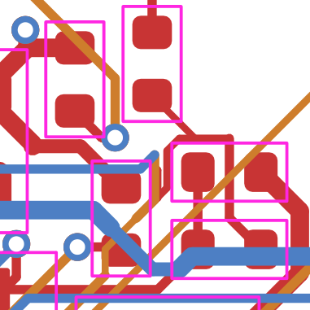<svg viewBox="0 0 100 100" aria-hidden="true"><circle cx="50.00" cy="50.00" r="2.6"/><text x="53.40" y="47.40">A</text><circle cx="50.00" cy="50.00" r="2.6"/><text x="53.40" y="47.40">B</text></svg><figcaption>5 × 5 mm window</figcaption></figure><div class="body"><div class="head"><span class="k">21</span><code class="net">Net-(U2-ILIM_HIZ)</code><label class="done"><input type="checkbox" id="done-21"> Done</label></div><dl><dt>A</dt><dd>Track end <span class="lay">F.Cu</span></dd><dt>B</dt><dd>Track end <span class="lay">B.Cu</span></dd><dt>at</dt><dd class="xy">(128.04, 152.97) → (128.04, 152.97)</dd></dl><p class="hint">Two ILIM_HIZ tracks on different layers end at the same point with no via. Add one via at (128.04, 152.97).</p></div></article><article class="card" id="gap-22"><figure class="crop">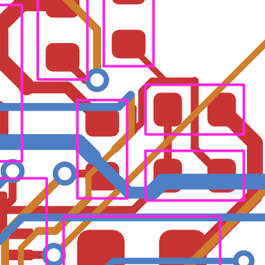<svg viewBox="0 0 100 100" aria-hidden="true"><circle cx="50.50" cy="49.72" r="2.6"/><text x="53.90" y="47.12">A</text><circle cx="49.50" cy="50.30" r="2.6"/><text x="52.90" y="47.70">B</text></svg><figcaption>5 × 5 mm window</figcaption></figure><div class="body"><div class="head"><span class="k">22</span><code class="net">Net-(U2-ILIM_HIZ)</code><label class="done"><input type="checkbox" id="done-22"> Done</label></div><dl><dt>A</dt><dd>Track end <span class="lay">F.Cu</span></dd><dt>B</dt><dd>Track end <span class="lay">In2.Cu</span></dd><dt>at</dt><dd class="xy">(128.09, 153.67) → (128.04, 153.70)</dd></dl><p class="hint">Same net, second spot: add one via at (128.04, 153.70).</p></div></article><article class="card" id="gap-24"><figure class="crop">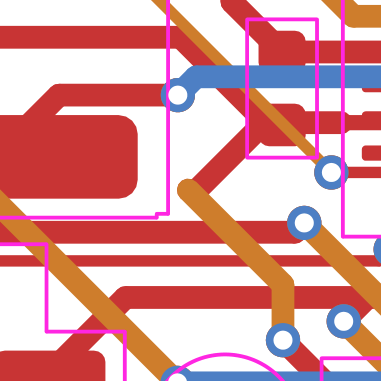<svg viewBox="0 0 100 100" aria-hidden="true"><circle cx="50.50" cy="50.14" r="2.6"/><text x="53.90" y="47.54">A</text><circle cx="49.50" cy="49.86" r="2.6"/><text x="52.90" y="47.26">B</text></svg><figcaption>5 × 5 mm window</figcaption></figure><div class="body"><div class="head"><span class="k">24</span><code class="net">Net-(U2-PMID)</code><label class="done"><input type="checkbox" id="done-24"> Done</label></div><dl><dt>A</dt><dd>Track end <span class="lay">F.Cu</span></dd><dt>B</dt><dd>Track end <span class="lay">In2.Cu</span></dd><dt>at</dt><dd class="xy">(119.57, 158.85) → (119.52, 158.84)</dd></dl><p class="hint">Two PMID tracks on different layers meet with no via. Add one via at (119.5, 158.8).</p></div></article></div></section><section class="group" id="gnd"><div class="ghead"><h2>Ground</h2><p>Pads or fill pieces with no path to the In1 ground plane.</p></div><div class="cards"><article class="card" id="gap-1"><figure class="crop">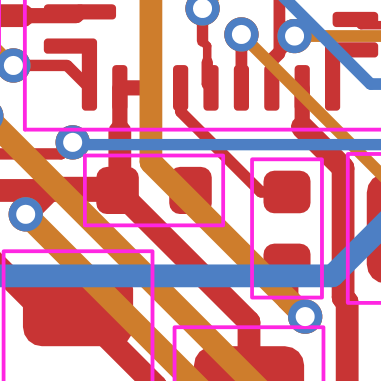<svg viewBox="0 0 100 100" aria-hidden="true"><circle cx="50.00" cy="50.00" r="2.6"/><text x="53.40" y="47.40">A</text></svg><figcaption>5 × 5 mm window</figcaption></figure><div class="body"><div class="head"><span class="k">1</span><code class="net">GND</code><label class="done"><input type="checkbox" id="done-1"> Done</label></div><dl><dt>A</dt><dd>GND fill piece <span class="lay">F.Cu</span></dd><dt>B</dt><dd>C6 pad 2 <span class="lay">F.Cu</span></dd><dt>at</dt><dd class="xy">(123.73, 160.25)</dd></dl><p class="hint">Drop a GND via right next to C6 pad 2, or move the track that cuts this pad off from the F.Cu GND fill.</p></div></article><article class="card" id="gap-2"><figure class="crop">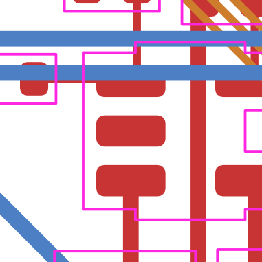<svg viewBox="0 0 100 100" aria-hidden="true"><circle cx="49.99" cy="50.00" r="2.6"/><text x="53.39" y="47.40">A</text></svg><figcaption>5 × 5 mm window</figcaption></figure><div class="body"><div class="head"><span class="k">2</span><code class="net">GND</code><label class="done"><input type="checkbox" id="done-2"> Done</label></div><dl><dt>A</dt><dd>GND fill piece <span class="lay">F.Cu</span></dd><dt>B</dt><dd>U7 pad 2 <span class="lay">F.Cu</span></dd><dt>at</dt><dd class="xy">(141.11, 158.00)</dd></dl><p class="hint">Drop a GND via next to U7 pad 2 (the 1.8 V buck’s ground pin). Keep it short, because it carries the switching return current.</p></div></article><article class="card" id="gap-4"><figure class="crop">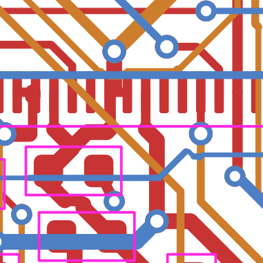<svg viewBox="0 0 100 100" aria-hidden="true"><circle cx="37.56" cy="65.00" r="2.6"/><text x="40.96" y="62.40">A</text><circle cx="62.46" cy="35.00" r="2.6"/><text x="65.86" y="32.40">B</text></svg><figcaption>5 × 5 mm window</figcaption></figure><div class="body"><div class="head"><span class="k">4</span><code class="net">GND</code><label class="done"><input type="checkbox" id="done-4"> Done</label></div><dl><dt>A</dt><dd>Track end <span class="lay">F.Cu</span></dd><dt>B</dt><dd>U100 pad 57 <span class="lay">F.Cu</span></dd><dt>at</dt><dd class="xy">(149.73, 149.50) → (150.97, 148.00)</dd></dl><p class="hint">U100 pin 57 is a ground pin at 0.35 mm pitch. Run a 0.2 mm stub straight out of the pin and join the C611 GND track, or put a via just past the pin row.</p></div></article><article class="card" id="gap-3"><div class="crop nocrop"><p>No single spot to show: KiCad reports this one as two pieces of top-layer fill. Find it in the DRC “Unconnected items” list.</p></div><div class="body"><div class="head"><span class="k">3</span><code class="net">GND</code><label class="done"><input type="checkbox" id="done-3"> Done</label></div><dl><dt>A</dt><dd>GND fill piece <span class="lay">F.Cu</span></dd><dt>B</dt><dd>GND fill piece <span class="lay">F.Cu</span></dd><dt>at</dt><dd class="xy">no single location (fill pieces)</dd></dl><p class="hint">Two pieces of the top-layer GND fill have no via to the In1 plane. Find them in KiCad’s DRC “Unconnected items” list (they show as Zone ↔ Zone) and put one stitching via in each.</p></div></article><article class="card" id="gap-5"><div class="crop nocrop"><p>No single spot to show: KiCad reports this one as two pieces of top-layer fill. Find it in the DRC “Unconnected items” list.</p></div><div class="body"><div class="head"><span class="k">5</span><code class="net">GND</code><label class="done"><input type="checkbox" id="done-5"> Done</label></div><dl><dt>A</dt><dd>GND fill piece <span class="lay">F.Cu</span></dd><dt>B</dt><dd>GND fill piece <span class="lay">F.Cu</span></dd><dt>at</dt><dd class="xy">no single location (fill pieces)</dd></dl><p class="hint">Same as row 3: a second isolated top-layer GND piece that needs a stitching via.</p></div></article></div></section><section class="group" id="boost"><div class="ghead"><h2>Boost converter (U4)</h2><p>One blocking via boxes in two feedback-side pins.</p></div><div class="cards"><article class="card" id="gap-9"><figure class="crop">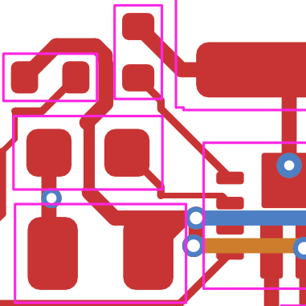<svg viewBox="0 0 100 100" aria-hidden="true"><circle cx="75.27" cy="74.72" r="2.6"/><text x="78.67" y="72.12">A</text><circle cx="24.73" cy="25.26" r="2.6"/><text x="28.13" y="22.66">B</text></svg><figcaption>6 × 6 mm window</figcaption></figure><div class="body"><div class="head"><span class="k">9</span><code class="net">Net-(U4-FB)</code><label class="done"><input type="checkbox" id="done-9"> Done</label></div><dl><dt>A</dt><dd>U4 pad 3 <span class="lay">F.Cu</span></dd><dt>B</dt><dd>R15 pad 2 <span class="lay">F.Cu</span></dd><dt>at</dt><dd class="xy">(111.83, 142.25) → (108.76, 139.25)</dd></dl><p class="hint">A VCC5V0_SYS via about 0.3 mm left of U4 pin 3 blocks the only exit. Move that via (or reroute its short stub), then route FB to R15 pad 2. Keep FB away from the SW node.</p></div></article><article class="card" id="gap-10"><figure class="crop">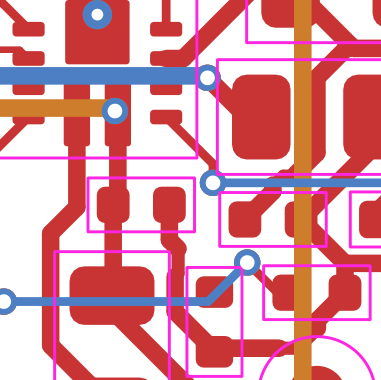<svg viewBox="0 0 100 100" aria-hidden="true"><circle cx="43.64" cy="23.11" r="2.6"/><text x="47.04" y="20.51">A</text><circle cx="56.35" cy="76.89" r="2.6"/><text x="59.75" y="74.29">B</text></svg><figcaption>6 × 6 mm window</figcaption></figure><div class="body"><div class="head"><span class="k">10</span><code class="net">Net-(U4-ILIM)</code><label class="done"><input type="checkbox" id="done-10"> Done</label></div><dl><dt>A</dt><dd>U4 pad 8 <span class="lay">F.Cu</span></dd><dt>B</dt><dd>R14 pad 1 <span class="lay">F.Cu</span></dd><dt>at</dt><dd class="xy">(114.17, 142.25) → (115.00, 145.74)</dd></dl><p class="hint">U4 pin 8 (ILIM) down to R14 pad 1. Same tight spot as FB; do it right after row 9.</p></div></article></div></section><section class="group" id="soc"><div class="ghead"><h2>Processor supplies (U100)</h2><p>Short 0.2 mm stubs out of 0.35 mm-pitch pins. SoCPower class: 0.2 mm track, 0.12 mm clearance.</p></div><div class="cards"><article class="card" id="gap-7"><figure class="crop">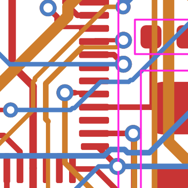<svg viewBox="0 0 100 100" aria-hidden="true"><circle cx="50.00" cy="36.00" r="2.6"/><text x="53.40" y="33.40">A</text><circle cx="50.00" cy="64.00" r="2.6"/><text x="53.40" y="61.40">B</text></svg><figcaption>5 × 5 mm window</figcaption></figure><div class="body"><div class="head"><span class="k">7</span><code class="net">VDD_0V9</code><label class="done"><input type="checkbox" id="done-7"> Done</label></div><dl><dt>A</dt><dd>U100 pad 71 <span class="lay">F.Cu</span></dd><dt>B</dt><dd>U100 pad 67 <span class="lay">F.Cu</span></dd><dt>at</dt><dd class="xy">(154.00, 145.32) → (154.00, 146.72)</dd></dl><p class="hint">U100 pins 71 and 67 are both VDD_0V9, 1.4 mm apart on the right side. Link them with a 0.2 mm track just outside the pin row.</p></div></article><article class="card" id="gap-8"><figure class="crop">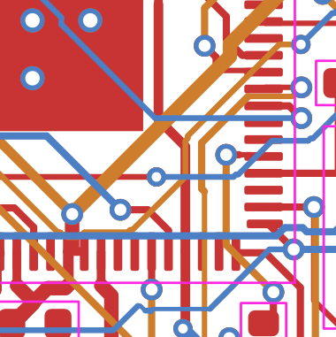<svg viewBox="0 0 100 100" aria-hidden="true"><circle cx="78.49" cy="36.40" r="2.6"/><text x="81.89" y="33.80">A</text><circle cx="21.51" cy="63.58" r="2.6"/><text x="24.91" y="60.98">B</text></svg><figcaption>7 × 7 mm window</figcaption></figure><div class="body"><div class="head"><span class="k">8</span><code class="net">VDD_0V9</code><label class="done"><input type="checkbox" id="done-8"> Done</label></div><dl><dt>A</dt><dd>U100 pad 71 <span class="lay">F.Cu</span></dd><dt>B</dt><dd>Track end <span class="lay">In2.Cu</span></dd><dt>at</dt><dd class="xy">(154.00, 145.32) → (150.03, 147.22)</dd></dl><p class="hint">From pin 71, a 0.2 mm stub out to a via that lands on the In2 VDD_0V9 island under the SoC.</p></div></article><article class="card" id="gap-11"><figure class="crop">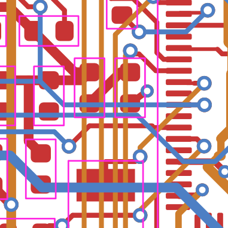<svg viewBox="0 0 100 100" aria-hidden="true"><circle cx="21.43" cy="48.96" r="2.6"/><text x="24.83" y="46.36">A</text><circle cx="78.57" cy="51.03" r="2.6"/><text x="81.97" y="48.43">B</text></svg><figcaption>7 × 7 mm window</figcaption></figure><div class="body"><div class="head"><span class="k">11</span><code class="net">Net-(U100Power-SARADC_USB_AVDD1V8)</code><label class="done"><input type="checkbox" id="done-11"> Done</label></div><dl><dt>A</dt><dd>C602 pad 1 <span class="lay">F.Cu</span></dd><dt>B</dt><dd>U100 pad 24 <span class="lay">F.Cu</span></dd><dt>at</dt><dd class="xy">(138.00, 144.48) → (142.00, 144.62)</dd></dl><p class="hint">U100 pin 24 (SARADC/USB AVDD 1.8 V) to C602 pad 1. Nudge C602 closer to the pin if there’s no path.</p></div></article><article class="card" id="gap-12"><figure class="crop">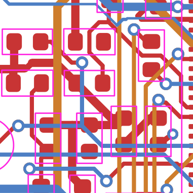<svg viewBox="0 0 100 100" aria-hidden="true"><circle cx="53.65" cy="21.49" r="2.6"/><text x="57.05" y="18.89">A</text><circle cx="46.35" cy="78.51" r="2.6"/><text x="49.75" y="75.91">B</text></svg><figcaption>7 × 7 mm window</figcaption></figure><div class="body"><div class="head"><span class="k">12</span><code class="net">Net-(U100Power-SARADC_USB_AVDD1V8)</code><label class="done"><input type="checkbox" id="done-12"> Done</label></div><dl><dt>A</dt><dd>R601 pad 1 <span class="lay">F.Cu</span></dd><dt>B</dt><dd>C602 pad 1 <span class="lay">F.Cu</span></dd><dt>at</dt><dd class="xy">(138.51, 140.50) → (138.00, 144.48)</dd></dl><p class="hint">R601 pad 1 to C602 pad 1: the filter path for the same AVDD rail.</p></div></article><article class="card" id="gap-13"><figure class="crop">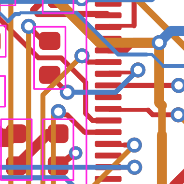<svg viewBox="0 0 100 100" aria-hidden="true"><circle cx="68.39" cy="27.30" r="2.6"/><text x="71.79" y="24.70">A</text><circle cx="31.61" cy="72.70" r="2.6"/><text x="35.01" y="70.10">B</text></svg><figcaption>5 × 5 mm window</figcaption></figure><div class="body"><div class="head"><span class="k">13</span><code class="net">VCC_3V3</code><label class="done"><input type="checkbox" id="done-13"> Done</label></div><dl><dt>A</dt><dd>Track end <span class="lay">F.Cu</span></dd><dt>B</dt><dd>Track end <span class="lay">F.Cu</span></dd><dt>at</dt><dd class="xy">(142.52, 140.78) → (140.50, 143.27)</dd></dl><p class="hint">VCC_3V3: join two track ends at the SoC’s left side. A 0.2 mm track, or a via to the 3V3 run on In2 nearby.</p></div></article><article class="card" id="gap-14"><figure class="crop">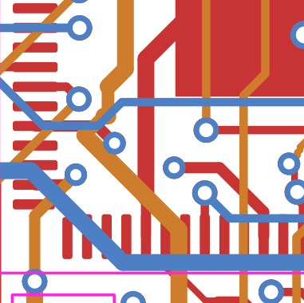<svg viewBox="0 0 100 100" aria-hidden="true"><circle cx="72.26" cy="55.35" r="2.6"/><text x="75.66" y="52.75">A</text><circle cx="27.75" cy="44.65" r="2.6"/><text x="31.15" y="42.05">B</text></svg><figcaption>5 × 5 mm window</figcaption></figure><div class="body"><div class="head"><span class="k">14</span><code class="net">VCC_3V3</code><label class="done"><input type="checkbox" id="done-14"> Done</label></div><dl><dt>A</dt><dd>Track end <span class="lay">F.Cu</span></dd><dt>B</dt><dd>Track end <span class="lay">In2.Cu</span></dd><dt>at</dt><dd class="xy">(145.29, 146.77) → (142.88, 146.19)</dd></dl><p class="hint">VCC_3V3: F.Cu track end to the In2 3V3 track. One via at the F.Cu end usually does it.</p></div></article><article class="card" id="gap-15"><figure class="crop">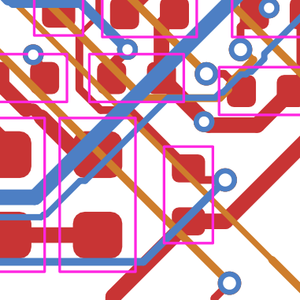<svg viewBox="0 0 100 100" aria-hidden="true"><circle cx="37.15" cy="26.04" r="2.6"/><text x="40.55" y="23.44">A</text><circle cx="62.85" cy="73.96" r="2.6"/><text x="66.25" y="71.36">B</text></svg><figcaption>6 × 6 mm window</figcaption></figure><div class="body"><div class="head"><span class="k">15</span><code class="net">VCC_3V3</code><label class="done"><input type="checkbox" id="done-15"> Done</label></div><dl><dt>A</dt><dd>C632 pad 1 <span class="lay">F.Cu</span></dd><dt>B</dt><dd>Track end <span class="lay">F.Cu</span></dd><dt>at</dt><dd class="xy">(155.02, 151.75) → (156.50, 154.51)</dd></dl><p class="hint">VCC_3V3 at C632 (SoC decoupling, bottom-right). Link C632 pad 1 to the 3V3 track just below it.</p></div></article><article class="card" id="gap-16"><figure class="crop">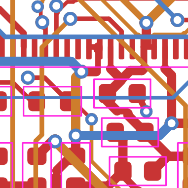<svg viewBox="0 0 100 100" aria-hidden="true"><circle cx="29.40" cy="75.17" r="2.6"/><text x="32.80" y="72.57">A</text><circle cx="70.60" cy="24.83" r="2.6"/><text x="74.00" y="22.23">B</text></svg><figcaption>6 × 6 mm window</figcaption></figure><div class="body"><div class="head"><span class="k">16</span><code class="net">VCC_1V8</code><label class="done"><input type="checkbox" id="done-16"> Done</label></div><dl><dt>A</dt><dd>Track end <span class="lay">In2.Cu</span></dd><dt>B</dt><dd>U100 pad 53 <span class="lay">F.Cu</span></dd><dt>at</dt><dd class="xy">(147.09, 151.04) → (149.57, 148.00)</dd></dl><p class="hint">VCC_1V8 pin 53 (bottom side) to the In2 1.8 V track at (147.1, 151.0): a 0.2 mm stub and one via.</p></div></article><article class="card" id="gap-17"><figure class="crop">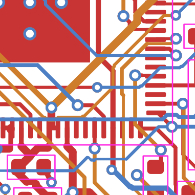<svg viewBox="0 0 100 100" aria-hidden="true"><circle cx="20.20" cy="65.66" r="2.6"/><text x="23.60" y="63.06">A</text><circle cx="79.80" cy="34.34" r="2.6"/><text x="83.20" y="31.74">B</text></svg><figcaption>7 × 7 mm window</figcaption></figure><div class="body"><div class="head"><span class="k">17</span><code class="net">VCC_1V8</code><label class="done"><input type="checkbox" id="done-17"> Done</label></div><dl><dt>A</dt><dd>U100 pad 53 <span class="lay">F.Cu</span></dd><dt>B</dt><dd>U100 pad 70 <span class="lay">F.Cu</span></dd><dt>at</dt><dd class="xy">(149.57, 148.00) → (154.00, 145.68)</dd></dl><p class="hint">VCC_1V8 pins 53 and 70 on two different sides; joining them through the In2 1.8 V run is enough.</p></div></article></div></section><section class="group" id="chg"><div class="ghead"><h2>Charger area</h2><p>Short low-current links near U2.</p></div><div class="cards"><article class="card" id="gap-6"><figure class="crop">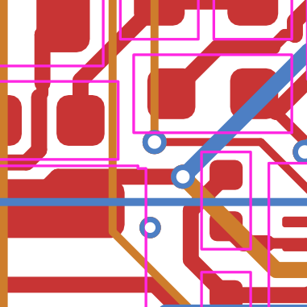<svg viewBox="0 0 100 100" aria-hidden="true"><circle cx="26.21" cy="26.18" r="2.6"/><text x="29.61" y="23.58">A</text><circle cx="73.77" cy="73.82" r="2.6"/><text x="77.17" y="71.22">B</text></svg><figcaption>6 × 6 mm window</figcaption></figure><div class="body"><div class="head"><span class="k">6</span><code class="net">VSYS</code><label class="done"><input type="checkbox" id="done-6"> Done</label></div><dl><dt>A</dt><dd>Track end <span class="lay">F.Cu</span></dd><dt>B</dt><dd>Track end <span class="lay">F.Cu</span></dd><dt>at</dt><dd class="xy">(118.03, 153.00) → (120.75, 155.73)</dd></dl><p class="hint">VSYS between C16 and C19 next to the charger. A short F.Cu link, at least 0.3 mm wide; nudge C16 if it’s in the way.</p></div></article><article class="card" id="gap-23"><figure class="crop">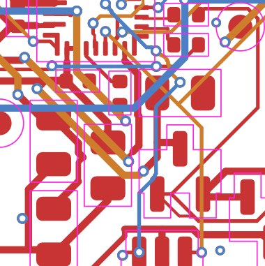<svg viewBox="0 0 100 100" aria-hidden="true"><circle cx="47.04" cy="86.36" r="2.6"/><text x="50.44" y="83.76">A</text><circle cx="52.96" cy="13.64" r="2.6"/><text x="56.36" y="11.04">B</text></svg><figcaption>11 × 11 mm window</figcaption></figure><div class="body"><div class="head"><span class="k">23</span><code class="net">VBUS</code><label class="done"><input type="checkbox" id="done-23"> Done</label></div><dl><dt>A</dt><dd>Track end <span class="lay">F.Cu</span></dd><dt>B</dt><dd>U2 pad 9 <span class="lay">F.Cu</span></dd><dt>at</dt><dd class="xy">(125.20, 166.40) → (125.85, 158.40)</dd></dl><p class="hint">U2 pin 9 is VAC1, the USB VBUS sense input (low current). A 0.15–0.2 mm track up to the VBUS track at (125.2, 166.4).</p></div></article></div></section><section class="group" id="sig"><div class="ghead"><h2>Signals</h2><p>USB D+ and the two long SD data lines.</p></div><div class="cards"><article class="card" id="gap-20"><figure class="crop">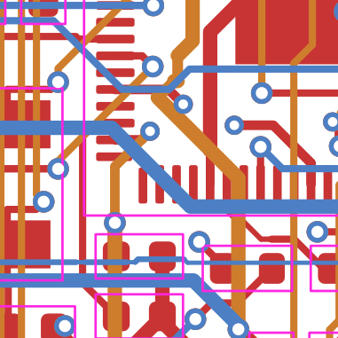<svg viewBox="0 0 100 100" aria-hidden="true"><circle cx="34.04" cy="21.38" r="2.6"/><text x="37.44" y="18.78">A</text><circle cx="65.96" cy="78.62" r="2.6"/><text x="69.36" y="76.02">B</text></svg><figcaption>7 × 7 mm window</figcaption></figure><div class="body"><div class="head"><span class="k">20</span><code class="net">Net-(U100System-USB_DP)</code><label class="done"><input type="checkbox" id="done-20"> Done</label></div><dl><dt>A</dt><dd>U100 pad 27 <span class="lay">F.Cu</span></dd><dt>B</dt><dd>Track end <span class="lay">F.Cu</span></dd><dt>at</dt><dd class="xy">(142.00, 145.68) → (144.24, 149.69)</dd></dl><p class="hint">USB D+ from U100 pin 27 to the series resistor R508. If convenient, reroute D− with it as a coupled pair in the USB90 class (0.155 mm, 0.127 mm gap); otherwise it is done in the quality pass.</p></div></article><article class="card" id="gap-18"><figure class="crop">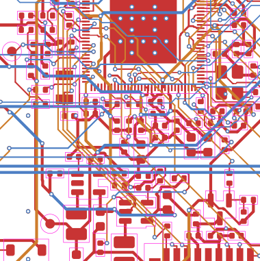<svg viewBox="0 0 100 100" aria-hidden="true"><circle cx="33.11" cy="5.53" r="2.6"/><text x="36.51" y="2.93">A</text><circle cx="66.89" cy="94.47" r="2.6"/><text x="70.29" y="91.87">B</text></svg><figcaption>27 × 27 mm window</figcaption></figure><div class="body"><div class="head"><span class="k">18</span><code class="net">/SoC/SD_D1</code><label class="done"><input type="checkbox" id="done-18"> Done</label></div><dl><dt>A</dt><dd>U100 pad 12 <span class="lay">F.Cu</span></dd><dt>B</dt><dd>Track end <span class="lay">F.Cu</span></dd><dt>at</dt><dd class="xy">(142.00, 140.43) → (151.17, 164.57)</dd></dl><p class="hint">SD_D1: about 26 mm from U100’s left side to the microSD socket. Route it with the other SD lines; they get length-matched in the quality pass anyway.</p></div></article><article class="card" id="gap-19"><figure class="crop">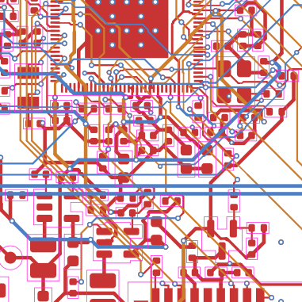<svg viewBox="0 0 100 100" aria-hidden="true"><circle cx="81.87" cy="94.06" r="2.6"/><text x="85.27" y="91.46">A</text><circle cx="18.13" cy="5.94" r="2.6"/><text x="21.53" y="3.34">B</text></svg><figcaption>25 × 25 mm window</figcaption></figure><div class="body"><div class="head"><span class="k">19</span><code class="net">/SoC/SD_D3</code><label class="done"><input type="checkbox" id="done-19"> Done</label></div><dl><dt>A</dt><dd>Track end <span class="lay">F.Cu</span></dd><dt>B</dt><dd>U100 pad 17 <span class="lay">F.Cu</span></dd><dt>at</dt><dd class="xy">(158.10, 164.43) → (142.00, 142.18)</dd></dl><p class="hint">SD_D3: about 27 mm, same path as SD_D1.</p></div></article></div></section>
  <footer>Generated 2026-11-21 from kicad-cli DRC with zones refilled. Same list as <code>docs/reports/t26-unrouted.md</code>. Crops show F.Cu, In2.Cu and B.Cu with part outlines. A and B are the two ends KiCad reports for each gap.</footer>
</main>
<script>
(function(){
  var KEY = 'klepon-worklist-done', done = {};
  try { done = JSON.parse(localStorage.getItem(KEY) || '{}') || {}; } catch (e) { done = {}; }
  var boxes = document.querySelectorAll('.done input'), prog = document.getElementById('progress');
  function paint(){ var n = 0; boxes.forEach(function(b){ b.closest('.card').classList.toggle('is-done', b.checked); if (b.checked) n++; }); prog.textContent = n + ' / ' + boxes.length + ' done'; }
  boxes.forEach(function(b){ b.checked = !!done[b.id]; b.addEventListener('change', function(){ done[b.id] = b.checked; try { localStorage.setItem(KEY, JSON.stringify(done)); } catch (e) {} paint(); }); });
  paint();
})();
</script>
